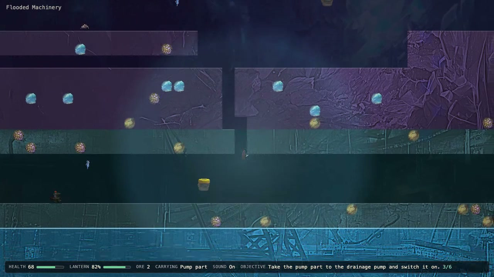

2 November 2026 · Agentic task loop · game with locally generated art
Digger: Below the Mine
Tenaz ended in COMPLETE with final ACCEPT after 61 h 58 min, 303 sessions and 66 completed tasks; 68 model-written checks pass. The agent generated 10 images with FLUX 3 Image Klein in ComfyUI and selected nine for a three-area illustrated mining game. Two runner interventions were required, without manually editing model code, notes or checks. Independent real-keyboard gameplay reaches the pump and deep crystal, not a winning return to the lift. Mining is horizontal only, and the automated victory route uses six harness teleports; runner completion is not independent proof of full game correctness.

What was checked
- Runner final state COMPLETE, no pending tasks, final review ACCEPT on 2 November 00:56:02.975 UTC. The last retained full verify result reports 68 passed, zero failed. These are the model-written checks and review; no hidden acceptance suite or independent full-suite rerun is claimed.
- Independent continuous real-time browser capture: normal keyboard controls, combat, horizontal mining, excavated cavern passage, pump-part collection, pump activation/drainage and deep-crystal pickup across all three areas; 50.04 seconds, 1280x720, 25 fps, original audio, final health 68. No teleports, manual frame steps, health edits or objective edits. The winning return is not shown.
- Source inspection: target() changes only horizontal tile position and keeps the player row. No downward-mining input exists. Descending uses prepared map openings; this is a material design limitation.
- The automated 38-leg victory route includes six harness teleports, including two vertical return climbs. Its cavern transfer skips a row containing 17 authored rock cells. Notional walk-time credit does not prove ordinary traversal, human pacing or a full winning playthrough.
- Ten image jobs, nine selected originals, three processed backgrounds and a 12-frame sprite atlas. The discarded rare-ore attempt g09 is replaced by g10. The final reviewer claimed all ten originals contribute visible art; the final manifest and atlas references show nine.
- First intervention: reviewer-time pause, reopen only T021dd blocked -> todo, switch edaebb3 -> f407ec5 and refresh the builder template. Its new builder and reviewer retain the ancestor note and accept the task. No model-authored code, notes or checks were manually edited.
- Second intervention: reviewer-time pause, f407ec5 -> 5eae2be (ADR 0014 only), no template/card/ledger edits. Journal confirms 71807 after eight clean sessions, then 78501, then full 85196. Later engine capacity errors relearn lower caps; the run ends at 52490.
- Engine metrics: 9206 completed proxy responses have a unique monotone match to Sushi by prompt/output/cached-token triples. Six preflight and 58 client-disconnect engine summaries are unassigned and excluded. The other 16 proxy rows have zero usage: 14 errors and two operator cancellations.
- Visual evidence shows generated art integrated into gameplay, but small character scale, repetitive scenery and rectangular tunnel masks remain limitations. A 5–10 minute human first-playthrough is not independently validated. The model review also notes faint chroma edges in the atlas.
- Qualitative assessment (operator): visually modest and not enjoyable to play, with characters too small relative to the environment. The substantial achievement is that the model implemented the game and generated, processed and integrated its own assets through the final runner review without human implementation or asset editing. The two human interventions repaired Tenaz; ordinary-control victory and human pacing remain unverified.
- Public artifact: reviewed static playable game and screenshot, linked from the run sheet and catalogues. Runtime source and rendered images are unchanged; the public runtime manifest retains record IDs, hashes and derived paths, omitting generation prompts and local metadata. Original project, raw evidence and gameplay video remain in the ignored local archive.
Limits of this evidence
Completion here is the runner outcome, not a hidden-accuracy or human-playability score. One indicative execution with two runner repairs, warm SSD cache and substantial host swap I/O. Mining is horizontal-only; the assisted test route and partial independent recording do not establish a normal-control victory or the requested human pacing. Context recovery succeeded, then later memory constraints caused further automatic reductions. No publication approval was requested or granted for these additions.
Configuration
The model, serving engine and agent used for this execution.
| Field | Value | Detail |
|---|---|---|
| Model · primary | Qwen 3.8 Flash Next · primary · reasoning medium | EXL3 K=2.625 experts, 8-bit dense weights; 16-bit n-gram table, about 95.4 GiB, memory-mapped and read from SSD |
| Checkpoint · primary | Qwen3.8-Flash-Next-Sushi-2.6bpw | primary model artifact |
| Model · image_generation | FLUX 3 Image Klein · image_generation | int8 ConvRot; Qwen3-VL 4B int8 ConvRot text encoder and FLUX.2 VAE in the pinned workflow |
| Checkpoint · image_generation | flux3_image_klein_int8_convrot.safetensors | image_generation model artifact |
| Runtime | Sushi 1.4.0 · MLX 0.32.3 · One OpenAI-compatible server process across the run; temperature 0, top-p 0.95, top-k 20 and thinking=true on all matched requests; MTP with MTP-head KV quantization, KV8, 512-token prefill chunks, 16384 maximum output tokens, vision, 20 GB SSD-only prefix cache. Startup scanned 10 persisted entries, about 19031 MB. Tenaz unloads the LLM through the load API for each ComfyUI image job. ComfyUI 0.43.2 is recorded in the launch snapshot. mode | inference engine and exact build |
| Harness | fx over ACP driven by Tenaz 0.2.0 (edaebb3, then f407ec5, then 5eae2be) 0.0.15 | the agent or client that drove the run |
| Runner | Tenaz 0.1.0 | open-source runner, github.com/aartiles/tenaz · how the runner evolved |
| Hardware | Apple MacBook Pro · 64 GB unified memory | hardware recorded for this execution |
| Workload | Digger: Below the Mine · revision 1 | Single long-horizon game-and-art challenge, not the earlier Digger 3D prompt. Static browser game, no supplied art; generate_image budget 20, at least six contributing generations. Tenaz builds edaebb3 -> f407ec5 -> 5eae2be, with two operator interventions. Configured session budget 85196, automatically reduced/raised; full budget recovered and later memory failures relearned caps, ending at 52490. Not a controlled unattended baseline or repeated engine comparison. |
| Context window | 131,072 tokens | maximum context configured for the serving runtime |
| Repetitions | 1 | executions recorded for this workload; one means an indicative result, not an estimate |
Inference measurements
Engine-side rates for this run. Each figure states its own statistic; figures from different runs are not interchangeable.
| Metric | Value | Definition |
|---|---|---|
| TTFT · median | 2.14089 s | Median engine-reported TTFT across matched responses, using high-resolution engine timing fields retained by the proxy, not harness event gaps. · n=9206 |
| Decode · per-request median | 50.1572 tok/s | Median of per-request output_tokens / engine decode_s across matched responses. · n=9206 |
| Decode · output-weighted | 45.0122 tok/s | Total matched output tokens divided by the sum of engine decode_s; equivalent to output-token-weighted decode throughput. · n=9206 |
| Draft acceptance | 63.7939 % | Sum of accepted MTP draft tokens divided by sum of drafted MTP tokens from matched engine request statistics. · n=9206 · 4092885 accepted / 6415795 drafted tokens; not an average of percentages. |
| Swapped in during the run | 198.768 GiB | Sum of sampled swapins_delta * page_bytes / 2^30 across the run; host-wide cumulative swap I/O, not resident memory or maximum swap occupancy. · n=7929 · 30-second session monitoring; 7929 samples, normal or warning pressure. Maximum swap occupancy 12.89 GiB; minimum sampled free memory 0.04 GiB. |
| Server process memory · peak | 50 GiB | Maximum sampled Sushi process footprint, rounded by the monitor; not total wired memory or a sum with it. · n=7929 |
| Image engine time | 751.812 s | Sum of ten media:comfyui lease job durations; excludes LLM unload/reload and is not a controlled image-model speed benchmark. · n=10 |
| LLM unload and reload for images | 96.766 s | Sum of LLM-holder unload and load lease durations for the ten image jobs; excludes ComfyUI submission and job time. · n=10 |
Agent session counters
Agent-wide usage totals. These include reasoning, tool calls and waiting, and are not model decode speed.
| Metric | Value | Definition |
|---|---|---|
| Run elapsed | 3718.0 min | First harness session after preflight (30 October 10:57:59.976 UTC) to COMPLETE (2 November 00:56:02.975 UTC); includes tools, checks, image jobs, retries and two pauses. · n=1 · 61 h 58 min 3 s; 153.784 seconds paused. Excludes project preparation and the 22.6 seconds between detached launch and session 001. |
| Agent sessions | 303 sessions | All harness sessions: 3 bootstrap, 177 builder, 96 reviewer, 19 replan, 6 split and 2 final reviewer. · n=1 |
| Sessions ended early | 92 sessions | Sessions with ok=false: 59 context-watchdog, 20 turn-watchdog, 1 idle-watchdog, 9 engine capacity-admission failures, 2 operator pauses and 1 harness UTF-8 crash. · n=303 |
| Sessions ended by engine errors | 9 sessions | Sessions whose journal records a nonempty capacity_limits list; each caused an automatic context reduction and a retry without charging a task attempt. · n=303 |
| Operator interventions | 2 actions | Two reviewer-time pauses and binary changes: first reopens T021dd and fixes ancestor-note ownership; second changes only the runner to retry beyond a learned context ceiling. · n=1 · No manual edits to model-authored code, notes or checks. One task-card status changed in the first intervention; no manual run.json or journal edits. |
| Model responses | 9,222 responses | All proxy request records: 9206 completed responses with engine timings, 14 zero-usage errors and 2 zero-usage operator cancellations. · n=1 |
| Matched model requests | 9,206 requests | Completed proxy responses matched one-to-one, monotonically and uniquely to Sushi log summaries by total prompt, output and cached-token triple. · n=1 · Forward-earliest and backward-latest full-sequence matches agree. Six preflight and 58 client-disconnect engine summaries remain unassigned and excluded. |
| Model request errors | 14 requests | Proxy records ending in error with zero token usage and no completed engine timing; excludes the two operator cancellations. · n=1 |
| Tool calls | 10,967 calls | Sum of harness tool_calls across all 303 session records; zero repaired tool calls. · n=303 |
| Context compactions | 0 compactions | Sum of compactions across all 303 session records. · n=303 |
| Image tool calls | 10 calls | Ten ComfyUI image jobs recorded in the lease journal and final manifest; budget 20, no supplied artwork. · n=1 |
Context and token counters
Token totals as reported by the harness or engine. Cached and cumulative figures are not additive with fresh input.
| Metric | Value | Definition |
|---|---|---|
| Maximum prompt context | 104,600 tokens | Maximum prompt input across the 9206 matched completed responses; not the configured server window. · n=9206 |
| Cumulative input | 426,813,285 tokens | Sum of total prompt tokens across matched responses, including repeatedly reused context; not unique input. · n=9206 |
| Cached input | 407,998,533 tokens | Sum of prompt tokens reported cached for matched responses; startup specifies SSD-only prefix caching. · n=9206 |
| Fresh input | 18,814,752 tokens | Total prompt input minus cached input for matched responses. · n=9206 |
| Output tokens | 6,979,723 tokens | Sum of output tokens across matched responses, including reasoning output. · n=9206 |
| of which reasoning output | 4,300,018 tokens | Sum of reasoning tokens reported by the proxy for matched responses; a subset of output tokens. · n=9206 |
| Prompt-cache token share | 95.5918 % | Cached prompt tokens divided by total prompt tokens, weighted by tokens across matched responses. · n=9206 · Warm-cache workload: the server scanned 10 persisted cache entries at startup. This is not a cold-prefill speedup measurement. |
Recorded check counters
Counts from the checks recorded with this run.
| Metric | Value | Definition |
|---|---|---|
| Tasks completed | 66 tasks | Final task cards marked done. Five other cards were dropped and five split; none remain active, todo or blocked. · n=1 |
| Reviews returning changes | 19 reviews | Task review verdicts returning CHANGES; 64 returned ACCEPT and 5 had no verdict, out of 88 recorded review results. · n=88 |
| Project checks passing | 68 checks | Last retained model-written verify --all result: 68 passed, zero failed; final reviewer returned ACCEPT. · n=1 · Not an independent hidden-acceptance score. The registration did not rerun the mutable suite in the original project. |
| Images generated | 10 images | Ten generated original PNGs retained and recorded in the manifest; includes one discarded rare-ore attempt. · n=1 |
| Generated images on the page | 9 images | Final manifest selects nine original generations, referenced by the three backgrounds and packed sprite atlas; g09 is discarded and g10 replaces it. · n=1 · The final model review claimed all ten contribute visible art; the final manifest contradicts that claim. |
Request records & provenance
9206 numeric request records, numbered in proxy order, with a unique full-sequence match against the Sushi process log. Each matches total prompt, output and cached tokens. TTFT/decode use high-resolution engine timing retained by the proxy; MTP counts come from the matched engine statistics. Six preflight and 58 client-disconnect engine summaries are excluded. Sixteen zero-usage proxy error/cancellation rows are excluded from the request array and performance aggregates. No prompts, tool results, private session identifiers or local source paths are included.
Run ID: 2026-10-30-qwen38-flash-next-sushi-v140-tenaz-digger-below-the-mine
One execution, with checks transcribed from the retained record. A completed session is not a quality score. Measurement method · All runs